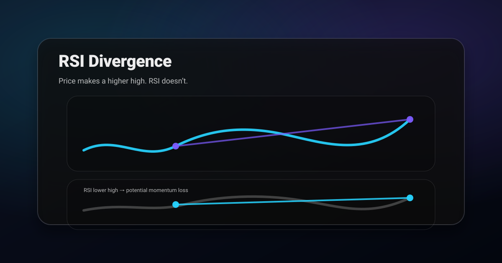

Reality check: no indicator guarantees profits. Your edge is divergence + level + trigger.
What RSI divergence is
RSI compares recent gains vs losses. Divergence happens when price makes a new extreme but RSI does not. That mismatch can signal momentum loss.
- Bearish divergence: price higher high, RSI lower high
- Bullish divergence: price lower low, RSI higher low
Where divergence works best
- At major support/resistance zones
- After extended moves (late trend / late range expansion)
- Near liquidity areas (obvious highs/lows)
In the middle of nowhere, divergence is noise.
What to pair with divergence (confirmation)
Divergence needs a trigger you can invalidate. Common confirmations:
- Structure shift (for example CHoCH)
- Rejection candle at a key level
- Break + retest of a minor level in the new direction
Plan template (two scenarios)
- Reversal scenario: divergence + trigger at level → target next zone → invalidation beyond the sweep.
- Continuation scenario: divergence fails (acceptance continues) → wait for BOS → trade pullback → invalidate below flip.
A prompt for AI divergence analysis
Analyze this chart screenshot for RSI divergence.
1) Timeframe: [fill in]
2) Is there bullish or bearish divergence? Point to the swing points
3) What key level is price reacting to (if any)?
4) Give a trigger + invalidation for a reversal scenario
5) Give a continuation scenario if divergence fails.Divergence is a warning, never a trigger
The single most expensive misunderstanding about divergence is treating it as an entry signal. Divergence tells you momentum is fading. It says nothing about when, or whether, price will actually turn. A trend can diverge for weeks while continuing to make new highs, and traders who short the first divergence in a strong uptrend lose money with impressive consistency.
Think of it as a reduction in confidence rather than a reversal call. A bullish trend showing bearish divergence is a trend you should stop adding to, tighten stops on, and lower expectations for. It is not automatically a trend to fade.
The reversal trade only becomes available once price itself confirms, which means structure breaking: a lower low after a series of higher lows, or a failure to make a new high followed by a break of the prior swing. Divergence tells you where to watch. Structure tells you when to act.
Hidden divergence points the other way
Most explanations cover only regular divergence, which hints at reversal. Hidden divergence is the mirror image and signals continuation, and it is arguably more useful because trading with the trend is easier than fighting it.
Hidden bullish divergence occurs when price makes a higher low while RSI makes a lower low. Price is holding up better than momentum suggests, which typically appears during a pullback in an uptrend and often marks the end of that pullback. Hidden bearish divergence is the reverse: a lower high in price against a higher high in RSI, usually appearing in a downtrend rally.
The practical value is timing entries in an existing trend. Rather than guessing where a pullback ends, look for hidden divergence at a level you already care about. When both appear together you have momentum and location agreeing, which is a far better basis than either alone.
Where divergence actually works
Divergence has a much better record in some conditions than others, and knowing which is most of the edge.
- At the end of extended moves. After a long directional run into a significant level, divergence is meaningful because the move is mature and participation is thinning.
- On higher timeframes. Four hour and daily divergences carry substantially more weight than five minute ones, which appear constantly and mean almost nothing.
- At a level you already marked. Divergence into prior structure is a real confluence. Divergence in the middle of a range is noise.
- When it is the third or fourth push. First divergence in a fresh trend is usually early. By the third push the trend is old and the signal improves markedly.
Conversely, divergence in a strong young trend is close to useless, and this is exactly where beginners use it most. A market that has just broken out will diverge repeatedly as it accelerates, because momentum peaks before price does in every healthy trend.
Reading RSI beyond divergence
RSI carries useful information that has nothing to do with divergence, and the range it operates in often says more than any individual reading.
In a healthy uptrend RSI tends to oscillate roughly between 40 and 80, with pullbacks finding support near 40 rather than reaching classic oversold territory. In a downtrend the band shifts to roughly 20 to 60. When that operating range shifts, the trend character has changed, and that shift frequently precedes visible structural change on the price chart.
This also explains why overbought and oversold readings mislead so badly. RSI above 70 in a strong uptrend is not a sell signal, it is a description of strength, and markets can hold elevated readings for a long time. The reading only becomes actionable in a range, where the boundaries are real and mean reversion is the dominant behaviour.
Choosing the swing points honestly
Divergence is unusually easy to see in hindsight and unusually easy to imagine in real time, because the pattern depends entirely on which two peaks you decide to compare. Change the pair and the divergence appears or vanishes.
Impose a rule before you look. Compare consecutive significant swing highs or lows, where significant means the point is visible without zooming and has a clear retracement either side. Do not skip an intervening peak because including it would break the pattern, which is the most common form of self-deception in this entire technique.
Keep the comparison window tight as well. Two peaks separated by a long stretch of unrelated price action are not really comparable, because the market that produced the first one may no longer exist. Adjacent swings within the same leg are the meaningful comparison.
Divergence across timeframes
Checking whether a divergence agrees with the timeframe above is a cheap filter that removes many poor trades. A four hour bearish divergence appearing while the daily is trending strongly upward is probably marking a pullback rather than a top, and the correct response is to expect a dip and then continuation.
When divergence appears on two timeframes at once, particularly at the same level, the signal is considerably stronger. That alignment is rare, which is precisely why it is worth waiting for rather than acting on every divergence the lower timeframe produces.
Combining divergence with a level and a trigger
Divergence on its own has a poor record. Divergence at a level you marked in advance, followed by a structural trigger, is a genuinely usable setup, and the three components each do a distinct job.
The level tells you where the trade is worth taking. The divergence tells you that momentum behind the current move is weakening, so the level has a better chance of holding. The trigger, meaning a rejection candle or a break of the most recent minor swing, tells you the turn has actually begun rather than merely being plausible.
Require all three and you will take far fewer divergence trades, which is the intended outcome. The trades you skip are the ones where momentum was fading in the middle of nowhere, and those were never going to be profitable regardless of how textbook the RSI pattern looked.
What to do when divergence fails
A failed divergence is informative. When price makes a new extreme against a clear divergence and keeps going, the trend is stronger than the momentum reading suggested, and that strength usually persists for a while.
Treat it as a signal to stop looking for the reversal on that timeframe and to trade with the trend on pullbacks instead. Traders who keep re-shorting each successive divergence in a powerful uptrend accumulate losses in a very predictable way, because the same condition that produced the first failed signal is still present.
Related posts
- Market Structure: BOS vs CHoCH (Simple Guide)
- Support & Resistance Trading (Simple Levels That Actually Work)
- Candlestick Patterns That Matter
- Break and Retest Strategy
- AI Trading Chart Analysis Workflow
Get ChartsGPT
Turn your screenshot into key levels, scenarios, trigger, and invalidation in seconds.


About ChartsGPT
ChartsGPT is an AI chart analysis app designed to turn screenshots into structured levels and scenarios. For support, contact anthonyvvza@gmail.com.